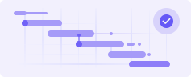

Head of Program Management
Program Intelligence AgentCross-team delivery, timelines, remediation, governance, and compliance rollout.

Stop deploying disconnected chatbots. Unify clinical, operational, and financial context into a single Company Brain a queryable, self-improving Agentic operating system built for enterprise scale.
Unified Intelligence Command
Drives overall corporate strategy, synthesizes cross-functional intelligence reports, and manages enterprise-wide risk.

Cross-team delivery, timelines, remediation, governance, and compliance rollout.

User/patient experience, features, adoption, usability, portal/app workflows.
Cost, revenue, ARR, budget, margin, revenue-at-risk, and financial exposure.
Technical systems, reliability, latency, incidents, architecture, and code quality.
Customers, contracts, renewals, churn, market position, partnerships, and growth.


Healthcare knowledge is fragmented across legacy EHRs, siloed claims networks, and unstructured clinical notes blinding standard AI models and halting automation.


The Healthcare Company Brain captures and synthesizes this scattered context into a governed execution layer to safely automate complex care pathways and billing exceptions.

Eliminate manual systemic handoffs across triage, billing, and care management instantly.

Elevate customer lifetime value and retention with deeply context-aware digital interactions.

Convert passive, unstructured backend data into immediate, auditable operational insights.

Expand your patient base exponentially without growing operational headcount or overhead.
WellnessGPT bridges your core legacy backend infrastructure directly with intelligent front-end delivery points.


Traditional AI searches documents. WellnessGPT builds a living knowledge graph of your enterprise.
Every report, meeting note, financial statement, engineering document, customer insight, roadmap, and operational update becomes connected organizational intelligence instead of isolated information.
Your company stops searching files. It starts reasoning across knowledge.

Fuses multimodal inputs text, reports, voice, images, and signals into a single, continuous patient timeline with zero context drops.

Combines conversations, vitals, and care-plan context to trigger proactive outreach, replacing reactive search with automated user retention.

Delivers lightning-fast, multilingual resolutions to complex scheduling or insurance disputes, maintaining one standard of care across geographies.
An encrypted hybrid memory fabric (Graph + Vector) enabling sub-150ms recall of longitudinal consumer records.

The command core. The orchestration engine routes every event, policy, consent, and escalation across the right agent and workflow.

Domain-specific digital workers running complex healthcare operations from end to end.

Business problems rarely belong to one department.
Revenue declines. Engineering sees reliability issues. Operations sees delivery delays. Product sees adoption changes.
WellnessGPT allows specialized executive agents to investigate independently, challenge each other's conclusions, and synthesize a unified executive recommendation.
This transforms isolated analysis into enterprise-wide reasoning.


Ask questions executives actually care about.
Why are renewals declining? What should Engineering prioritize this quarter? What is our biggest enterprise risk?
Instead of generating another AI response, WellnessGPT delivers an executive brief complete with evidence, cross-functional impact, root cause analysis, confidence, and strategic recommendations.
The value of intelligence is measured by execution.
Every recommendation can become a tracked executive decision with ownership, remediation plans, progress, and organizational accountability.
Future reasoning continuously learns from previous decisions, creating an enterprise that becomes smarter over time.
Tracked outcomes from consensus-driven recommendations.
Clear assignment of responsibility for executing the decision.
Explicit, granular steps scheduled for remediation.
Continuous feedback loop validating execution progress.

Every document understood. Every investigation completed. Every executive decision recorded.
The enterprise continuously improves its reasoning, preserving institutional knowledge that compounds over time instead of disappearing inside meetings and documents.
Join the industry leaders moving past superficial bots to build highly defensive, scalable, AI-native healthcare operations.